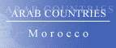
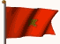

The Country & People of Morocco
This page contains links to sites in Morocco and Morocco related sites.
For Middle East, North Africa, Arab and regional information visit Arab Countries
Hints:
- Use the "FIND" function in the Edit menu of your browser to search the page
- Use translating services in Chrome or Bing Bar in Internet Explorer to view page and/or linked websites in your language
General Info
* Business
* Culture
* Education
* History
* Media
* Organizations
* Travel
* Gateways
* Arab Countries
Morocco, officially Kingdom of Morocco, kingdom (2005 est. pop. 32,726,000), 171,834 sq mi (445,050 sq km), NW Africa, bordered by the Mediterranean Sea (N), the Atlantic Ocean (W), Mauritania (which lies beyond the disputed territory of Western Sahara, S), and Algeria (E). Principal cities include Rabat (the capital), Casablanca, Marrakech, and Fes. The Atlas Mts., rising to 13,671 ft (4,167 m) in Jebel Toubkal in the southwest, dominate most of the country. In the south lie the sandy wastes of the Sahara desert, but in the north is a fertile coastal plain, home of most of the population. Agriculture and mining are economic mainstays. Morocco is a leading producer and exporter of phosphates; other important minerals include iron ore, copper, lead, zinc, cobalt, manganese, and coal. Food processing and the manufacture of leather goods and textiles are also important. Half the labor force is employed in agriculture, growing cereals, citrus fruits, and vegetables. Tourism and fishing also contribute to the economy. Most Moroccans are of mixed Arab-Berber descent and are Muslim; Islam is the state religion. There are small Christian and Jewish minorities. Arabic is the official language; Berber dialects, French (a main language of commerce), and Spanish are also spoken.
History
Originally inhabited by Berbers, Morocco became a province of the Roman Empire in the 1st cent. AD After successive invasions by barbarian tribes, Islam was brought by the Arabs in 685.
An independent Moroccan kingdom was established in 788; its dissolution in the 10th cent. began a period of political anarchy.
The country was finally united in the 11th cent. by the Almoravids, a Berber-Muslim dynasty, who established a kingdom reaching from Spain to Senegal. Unity was never complete, however, and conflict between Arabs and Berbers was incessant. European encroachment began in 1415, when Portugal captured Ceuta, and ended with the Portuguese defeat at the battle of Ksar el Kebir (Alcazarquivir) in 1578.
In the 19th and early 20th cent. the strategic importance and economic potential of Morocco once again excited the European powers, sparking an intense, often violent, rivalry among France, Spain, and Germany. Finally, in 1912, most of Morocco became a French protectorate; a small area became a Spanish protectorate. Nationalist feelings began to surface in the 1930s, becoming more militant after World War II, and in 1956 Morocco gained its independence.
In 1957 the sultan became King Muhammad V.
He was succeeded in 1961 by his son, Hassan II, whose early reign, plagued by internal unrest, coups, and assassination attempts, was repressive.
Hassan's position was strengthened in 1976, when Spain relinquished the Spanish Sahara (now Western Sahara) to joint Moroccan-Mauritanian control. Challenged by the Polisario Front, a guerrilla movement backed by Algeria and seeking independence for the area, Mauritania withdrew in 1979, but Morocco continued battling there and claimed the entire territory.
King Hassan died in 1999 and was succeeded by his son Muhammad VI. Initially extremely popular, the new king revealed himself to be a strong advocate of social change and economic improvement.
In July, 2002, Morocco occupied an uninhabited islet off Ceuta that is claimed by Spain, drawing international attention to the disputed Spanish enclaves along Morocco’s Mediterranean coast. After Spanish forces removed the Moroccans, both sides agreed to leave the islet unoccupied.
The Moroccan elections of 2002 and 2007 returned the governing coalition to power, though the Socialist Union of People’s Forces was supplanted as the dominant party by the conservative Independence party in 2007. The visit of the Spanish king to Ceuta and Mellila in 2007 soured Moroccan-Spanish relations.
In Feb., 2011, there were proreform demonstrations in several of Morocco's cities; the following month, the king pledged that there would be constitutional reforms. The reforms approved in a referendum in July included transferring some of the king's governing powers to the prime minister and parliament and making Berber an official language, but the king retained his foreign policy, military, and religious primacy. The unusually high turnout and vote in favor of the changes led those who criticized the reforms as inadequate to question the credibility of the referendum. In the November parliamentary elections the moderately Islamist Justice and Development party (PJD) won the largest bloc of seats, and PJD leader Abdelilah Benkirane became prime minister of the broad coalition government formed in Jan., 2012.
In July the Independence party withdrew from the government, objecting to proposed subsidy and pension reforms. A new government was formed in October, with the National Rally of Independents replacing the Independence party; although Benkirane remained prime minister, the new cabinet reduced the influence of the PJD.
********
Western Sahara, territory (2005 est. pop. 273,000), 102,703 sq mi (266,000 sq km), occupied by Morocco, NW Africa, bordered by the Atlantic Ocean (W), Morocco (N), Algeria (NE), and Mauritania (E and S). Part of the Sahara Desert, the land is extremely arid and is covered with stones and sand. The main towns are Laayoune (formerly El Aai?n), the capital, Dakhla (formerly Villa Cisneros), Boujdour, and Essemara. The traditional economy is based on the raising of goats, camels, and sheep and the cultivation of date palms. There is some fishing. Rich deposits of phosphates were first exploited in the 1970s; potash and iron have also been found. The people are Arabs and Berbers, most of whom are Sunni Muslim. Arabic is the chief language.
History
Although visited by the Portuguese in 1434, the area that is now Western Sahara had little contact with Europeans until the 19th cent.
In 1884 Spain proclaimed a protectorate over the coast, and a Spanish province, known as Spanish Sahara, was established in 1958.
In 1976 Spain transferred the territory to Morocco and Mauritania, but following guerrilla action by the Polisario Front, a nationalist group based in Algeria and seeking self-government for the Saharans.
Mauritania withdrew in 1979. Morocco then occupied the Mauritanian portion. The guerrillas continued attempts to liberate Western Sahara, renaming it the Sahrawi Arab Democratic Republic.
A temporary truce signed in 1990 was made permanent (1991), but a referendum on the area's status was delayed in the following years by disputes over who would be permitted to vote.during which time the region was integrated administratively into Morocco. UN attempts to broker a peace agreement have been unsuccessful, with Morocco generally rejecting any plan that might affect its sovereignty over the area.
In 2007 both sides participated in UN-sponsored talks, but the negotiations produced no breakthrough.
In Nov., 2010, violent clashes between Sahrawis and security forces broke out after government forces moved to clear a Sahrawi protest encampment outside Laayoune.
********
Copyright (c) 2012 Columbia University Press.
Used by permission of Columbia University Press.
General Info
Cities, towns, municipalities, places, flag, maps, useful Information....
Business
Economy, reports, statistics, banks, directories, jobs, investment, promotion....
Culture
General resources, heritage, art, literature, photography, cinema, music, song, dance, cultural, scientific,
environmental, sporting entities & info....
Education
Schools, colleges, academies, universities, polytechnics, institutions, research, resources, projects....
History
Ancient & modern history, human rights, politics & political parties, related sites, articles....
Media
Newspapers, magazines, news, newsletters, news agencies, radio, TV, internet, articles, reports, cartoons....
Organizations
Government, ministries, overseas missions, embassies, corporations, organizations, industrial entities, centers,
public hospitals, institutions, societies, foreign entities....
Travel
Airlines, air, sea & coach charters services, travel, tours, guides, hotels, resorts, inns, hostels, health,
travel tips, weather....
Gateways
Gateways, search engines and directories to country related sites and information....
Arab Countries
Arab World: Middle East, North Africa, Arab and regional information. Resources to other Arab countries....
About Morocco
General Information Also see Travel
- ArabInfo Overview, government, history, links
- ArabNet Overview, history, geography, business, culture, government, transport, tour guide, links
- Atlapedia Geography, climate, people, demography, religion, education, modern history, currency, other information....
- BBC Country Profile Key facts, figures and dates
- Britannica.Com Country info, land, people, economy, society, government, history, culture, maps, statistics, links....
- CIA World Factbook - Morocco Map, geography, people, government, economy, communications, transportation, military, issues
- CIA World Factbook - Western Sahara Geography, people, government, economy, transportation, communications....
- Country Reports Morocco: Economy, defense, geography, government, people, anthem, map, news, weather, links....
- Country Reports Western Sahara: Economy, defense, geography, government, people, anthem, map, news, weather, links....
- Encarta OnLine Info, land & resources, population, economy, government, history, other related items, links....
- Encyclopaedia of the Orient Morocco - Geography, politics, economy, health, education, religion, people, history, anthem, cities....
- Encyclopaedia of the Orient Western Sahara - Geography, politics, economy, health, education, religion, people, history, anthem, cities....
- Expedia Almanac, fast facts, communications, on business, health & safety, transportation, traveler's directory
- Focus OnLine Morocco - The Land of the Moors. General info, regions, tourism, cuisine, music, maps....
- Geographia.Com Exploring Morocco, location, geography, and climate, history & culture
- Info Please General info, map, geography, government, history, land & people....
- Mincom.. Ilaycom All about Morocco from the Ministry of Communication
- MoroccoWeb Global intelligence unit and virtual exhibition on media, business, tourism, politics, services in Morocco
- Nation By Nation Info, government, human rights, news, geography, history, people, links....
- Virtual Morocco Info, culture & history, media, cities & travel....
- Vision du Maroc A virtual tour to a fascinating country: panoramic views & interactive dictionnary
- World66 General info, cities, history, people, economy, getting around, getting there, links....
Cities, Towns, Municipalities & Places
- Fez Heritage, tourism, economy, where to go....
- Safi General info, history, society....
- World Heritage Cities Medina of Essaouira (formerly Mogador) - An exceptional example of a late-eighteenth- century fortified town
- World Heritage Cities Medina of Fez - A rampart with a series of gates surrounds the two centres of medieval Fez
- World Heritage Cities Medina of Marrakesh - A series of noteworthy monuments
- World Heritage Cities Portuguese City of Mazagan (El Jadida) - An outstanding example of the interchange of influences between European and Moroccan cultures
- World Heritage Cities Historic City of Meknes - The old city includes the medina and the imperial city partly built on the site of the medina and that of the former merinide casbah
Flag, Maps, Useful Information....
- Cellular News Cellular coverage map, systems, frequencies....
- Ethnologue Languages
- Flag Description, meaning, history, interesting facts
- Flag Explanation, historical, military & political flags, subdivisions, national emblem....
- World Atlas A brief description, fast facts, flag, landforms, maps, traveller info, weather
- World Clock Local time, sunrise, sunset, GMT offset, daylight saving....
- World Paper Money Paper currency since 1929
General Info
* Business
* Culture
* Education
* History
* Media
* Organizations
* Travel
* Gateways
* Arab Countries
Business and Economy
General, Economy, Reports & Statistics
- Australian Department of Foreign Affairs and Trade Fact sheet (pdf)....
- Bilateral Relations with Japan Diplomatic, investment, economic cooperation, residents....
- British Chamber of Commerce for Morocco To strenghten relations and exchanges between both partners
- MBendi Business information, news, industries, events
- Morocco and the IMF Position in the fund, reports....
- Muslim Trade Network Trade reference directory and guide....
- Ports Focus Ports, harbours, marinas....
- Tanmia Portail du Developpement au Maroc
- US Department of Energy Analysis, information, oil, natural gas, coal, electricity....
- US Department of State Country commercial guide 2001 (pdf)
- US Department of State Country reports on economic policy and trade practices - 1999
- World Bank Overview, news & events, data & statistics, publications & reports, development topics, projects & programs, Public Information Center
- World Trade Organization - WTO
Provides trade statistics, goods schedules, services schedules and MFN exemptions, trade policy reviews, dispute cases, and notifications
Banks
- Bank Al-Maghrib
Developing the money market in connection with money stability and ensuring its regulation
- Credit du Maroc
Directories, Job Opportunities
Investment & Promotion....
- American Chamber of Commerce in Morocco To cooperate with all levels of US and Moroccan government and business....
- Career Morocco Online recruiters
- G.B Communication Specialised in organization of fairs and special events
- Morocco DMC Handling sophisticated conferences, meetings, incentives and leisure travel to Morocco and Marrakech in particular
General Info
* Business
* Culture
* Education
* History
* Media
* Organizations
* Travel
* Gateways
* Arab Countries
Art, Culture & Sport
General Resources, Heritage....
- Maghreb Arts Cinema, Theatre, Musique, Medias, Arts Plastiques, Photo & Arts Visuels
- Museumes of Morocco Even empty, they would be well worth a visit....
Art, Literature, Photography, Cinema....
- Rita Alaoui Painter. Pantings, biography, portfolio, recent works
- Said Yaktine Writer. Sardiat - books & essays
- House of Poetry' To deepen relationships between poets and people interested in poetry
- Painters of Morocco Visit the richest Moroccan exhibition ever realised
- J. F. Maion Nomads'Land. Evocative landscape, adventure and travel photography
- Robert Bremec Morocco Photo Diary - Cities & places
- Arab Film Distribution - Morocco Features a wide range of narrative films, documentaries, visual essays and ethnographic films
- Internet Movie Database Movie & TV reports
- The Past & Present of Djemma El Fna Winner - Silver Award, Houston International Film Festival
- "HEY ! PSST... HABIBI" Theatre
- Todays Morocco Moroccan Movies and Music
Music, Song & Dance....
- Essaouira Gnaoua and World Music Festival
A major cultural event for musicians from the jazz, pop, rock and contemporary world music movements
- Fez Festival World of Sacred Music
- The Master Musicians of Jajouka Were the Royal Court musicians and are descendants of one family, the Attars and now collaborating with other musicians
- Moroccan Music A Mile In Our Shoes - A musical journey through Morocco
- Samira Said Biography, her works, her fans....
Cultural, Scientific, Environmental, Sporting Entities & Info
- Animal Info Threatened species, environmental and social data
- AquaStat Information on quantity and quality of freshwater and its availability
- Jeunesse des Chantiers Marocains Youth Camps. Young people learning about each other's countries and cultures
- Wydad Athletic Club
Art, Antiques & Traditional Crafts (for sale)
- Shop-Morocco Online retailer of Moroccan crafts and goods. Ceramics,tagines,carpets and rugs
General Info
* Business
* Culture
* Education
* History
* Media
* Organizations
* Travel
* Gateways
* Arab Countries
Education
Schools, Colleges, Academies, Universities & Polytechnics
- Ecole 2 MARS Tikiouine, Agadir
- Ecole des Hautes Etudes Commerciales
- Ecole des Sciences de l'Information Irfane
- Rabat American School An American style education
- Al-Akhawayn University Ifrane Ifrane
- Universite Abdelmalek Essaadi Tetouan
- Universite Cadi Ayyad
- Universite Mohammed I Oujda
- Universite Mohammed V Agdal
- Universite Mohammed V Souissi - Ecole Nationale Superieure d'Informatique et d'Analyse des Systemes
- WorldWide Classroom University & adult education, K12 & teen....
Institutions & Organizations
- American Cultural Association Programs and activities designed to disseminate the languages and cultures of the two countries
- Arabic Language Institute in Fez An extensive library collection focusing on Arabic linguistics....
- Institut Agronomique et Veterinaire Hassan II Tetouan
- International Language Lab Center Rabat - Adheres to American and British educational systems
- Royal Centre for Remote Sensing
Collects & analyse data. Provides training & education in space technologies....
Research, Resources & Projects
- Center of Environmental Issues and Regional Development A center for environmental research and development studies
- Centre National pour la Recherche Scientifique et Technique
- Hassanian Lectures From Ministry of Waqfs and Islamic Affairs
General Info
* Business
* Culture
* Education
* History
* Media
* Organizations
* Travel
* Gateways
* Arab Countries
History, Human Right & Politics
Ancient & Modern....
- Political Geography Land and people, economy, government, history....
- World Statesmen - Morocco Flags, chronology, sultans, governors, ministers....
- World Statesmen - Western Sahara Flags, chronology, rulers, governors, ministers....
Human Rights, Politics & Political Parties....
- Amnesty International News, reports, urgent action. Latest annual report....
- Human Rights Watch Human rights developments & report
- US Department of State Morocco - Country reports on human rights practices
- US Department of State Western Sahara - Country reports on human rights practices
Related Sites, Articles....
- ARSO
The struggle of the Sahrawi people for self-determination
- Constitution Background, history & news
General Info
* Business
* Culture
* Education
* History
* Media
* Organizations
* Travel
* Gateways
* Arab Countries
Visit Arab Media for satellite stations & Arab newspapers
Media
Newspapers, Magazines....
- Al-Sabah Daily newspaper
- L'Economiste Le premier quotidien economique du Maroc....
- Lobservateur Daily newspaper
- Maroc Hebdo International Double version HTML et PDF
- Maroc News Assorment of daily, weekly and monthly magazines and newspapers
OnLine News, Newsletters, News Agencies....
- El Jadida Un revue de la presse électronique, Meteo, Galerie photo, Programme religio-culturel....
- Al-Jarida Al-Maghribia Journal of Maghreb online....
- Al-Maghreb Info Learn more about Morocco or read the latest news
- All Africa.Com News plus, news wire....
- La Marocaine Premier site dedie a la femme Marocaine. Moroccocan women portal
- Maghreb Arabe Presse News in brief
- Menara Depêches, revue de presse, salon, economie, technologies, sport....
- Morocco Newsline National and world news plus, lifestyle, special reports....
- News Central L'actualite Marocaine online....
- Washington Post Morocco-News & references
- Washington Post Western Sahara-News & references
- Yahoo full news coverage
Radio, TV, Internet....
- 2M Channel 2 TV
- Casablanca Radio The top 10, sound bank, popular humour, in concert, religion....
- Raioo Discussion forums
- Medi 1 > Mediterranean International Radio - Music, news and entertainment
Articles, Reports, Cartoons....
- M. Ali Cartoons
General Info
* Business
* Culture
* Education
* History
* Media
* Organizations
* Travel
* Gateways
* Arab Countries
Visit Arab Organizations for Pan-Arab, middle East, North Africa and regional organizations
Government & Organizations....
Government, Ministries, Overseas Missions, Embassies....
- Chiefs of State and Cabinet Members
- Political Leaders Dates and figures of the leadership since 1955 (with pictures)
- Center of Renewable Energy Development Energy-Development-Environment
- Departement de l'Industrie et du Commerce
- Ministere des Affaires Etrangeres et de la Cooperation
- Ministere de l'Education Nationale et de la Jeunesse
- Ministere de l'Energie et des Mines
- Ministere de l'Enseignement Superieur et de la Recherche Scientifique
- Ministere de l'Equipement et du Transport
- Ministere des Finances et de la Privatisation
- Ministere de la Justice
- Ministere de la Modernisation du Secteur Public
- Ministere des Pêches Maritimes
- Ministere des Relations avec le Parlement
- Ministere de la Sante
- Office National de l'Eau Potable
- Secretariat d'Etat charge de la Poste et des Technologies des Telecommunications et de l'Information
- Embassy of Morocco in Germany
- Permanent Mission to UN
The mission, terrorism, peace, human rights, media, data & statistics, news & information, photo gallery, links
Corporations, Organizations, Public Hospitals and Industrial Entities
- Agence Nationale de Reglementation des Telecommunications
- Maroc Telecom
Centers, Institutions, Societies....
- Centre d'Etudes et de Recherche des Dirigeants
- Chaos Computer Club
- Institut National de Statistique et d'Economie Appliquee
Foreign Entities
- British Embassy - Rabat The Embassy offers consular, commercial and visa services to members of the public....
- French Embassy
- US Embassy Consular section, public affairs section, commercial service....
- British Counsil Library and information services, events, news, conferences, learn English
- United Nations Le Programme des Nations Unies pour le developpement
- USAID Assistance to Morocco....
General Info
* Business
* Culture
* Education
* History
* Media
* Organizations
* Travel
* Gateways
* Arab Countries
Travel & Tourism
Airlines, Air, Sea & Coach Charters Services
- Royal Air Maroc The only airline to serv all of Morocco....
- L'Office National Des Aeroports
Travel, Tours, Guides.... More country info
- Atlas Voyages A comprehensive range of quality services
- Beau Maroc Guide de voyages et sejours
- Cap Tours Services going beyond your expectations
- Dounia Travel Discover a different Morocco not on conventional tours and far from the beaten track
- Dunes Line Experience the Southern Morocco where the ocean and the Atlas mountain ranges meet
- Erlebnis Tours Maroc Provides tailor made personal quality tours, quad biking tours, adventure activities or living the Sahara Experience
- Esprit Berbere Groupe de guides Marocains competents et motives originaires de differentes region
- Exclusively Morocco Moroccan adventure and luxury travel including camel and hiking treks
- Imilchil - Morocco Adventure Travel Personalized tours - Students, weddings, golf , caravan, desert....
- Magic Morocco Morocco Travel Guide
- Magnificent Morocco Push the boundaries of your imagination on a private tour in Morocco. Breathtaking landscapes, fascinating culture and hidden treasures
- Maroc.Net The House of Morocco - Gateway, news, tourism, culture, city guide....
- Marokko Reisen und Urlaub Informations, geography, visa regulations, health, getting there and away, getting around....
- Mini Tours Morocco Tangier Private tour from 1 to 15 days for Singles, Couples, Families or Groups up to 8 People
- Morocco Bound Information for the independent traveler
- Morocco Central Guide and gateway....
- Morocco Holidays Guide Comprehensive tourist information to Morocco along with details of each city and place
- Morocco Travel Resorts & hotels, holiday types, travel info
- Moroccan National Office of Tourism The country,culture,how to get there, practical info, destinations....
- Morocco Guide Useful information and things you need to know before you travel to Morocco
- MyHolidayZZ Travel advice, information, good plans and stays in Morocco
- Olive Branch Tours Immerse yourself in the centuries-old Moroccan civilization, and savor superb local cuisine....
- S'Tours Tours & tourism, golf, photo collection, Morocco, cities....
- Tourism in Morocco Travel guide & information....
- Sahara Treasures Geological tours, adventure and culture
- Sand & Stone Saharan trekking adventures,camels or 4WD
- Siente Marruecos Excursions from Malaga, Algeciras and Tarifa to Morocco
- SimplyMorocco Valuable information and services to people that wish to visit Morocco
- Unitours Maroc Discover authentic modern and traditional way of Moroccan daily life
- Vision du Maroc A virtual tour with panoramic views
- Voyage to Morocco Jewish heritage , honeymoon, golf and trekking tours
- Your Morocco Tour Explore an ancient land of limitless adventure
- Adventures of Morocco Getting there & costs, safety & health, visa, climate, cities, holidays....
- Africa Guide Introduction, visitor info, accommodation, tours....
- Lonely Planet Travel information, maps, photos, background historical and cultural information
- Middle East Travel Accommodation, history, after hours, travel info, addresses, cities & sights, business....
- Travel Guide General & travel info, money, duty free, health, accommodation, visas....
- Travel Puppy Morocco travel information & guide
- Vacations Morocco Travel specialist to the best of Morocco, hotels, airfare, tour guides, private excursions and more
- Viajes a Marruecos desde Sevilla Descubre Marruecos, lo mejor del pais y su gente
- World Travel Guide Travel information, regions & places....
Hotels, Resorts, Inns, Hostels....
- Dar Zaman Chic and romantic boutique riad in Marrakech
- Hotel Kamal Agadir - Located in the heart of the city center
- Hotel Lalla Mira
Essoauira - Good feeling and exotic charme in Morroco
- Hyatt Regency Hotel Casablanca - in the heart of the commercial district
- Kerdous Hotel Reception, accommodations, excursions, reservations, special offers....
- La Maison Bleue Moorish Residence. Feel as though you've stepped back in time
- Maison mk Boutique hotel in Marrakech
- Medina Experience A selection of traditional accommodations in the city of Marrakech
- Moroccan Holiday Rentals Properties, every option a Morocco lover could wish for has been catered for
- Morocco Rents Luxury villa rentals
- Palmeraie Golf Palace & Resort Moorish-style oasis of fountains, courtyards, arches and blue-tiled patios
- Rabat Hilton Souissi - Spacious and stylish rooms
- Riad Agathe Marrakesh - Mixes traditional decoration and modern comfort
- Riad Marrakech, Dar Najat A welcome retreat from the hustle and bustle of Marrakech
- Ryad Dyor A luxury boutique hotel in Central Marrakech. Panoramic roof terrace to relaxing hammam spa, expect beautiful living at its best
- Tikida Beach Hotel Situated directly beside the ocean with its own private beach
- All Hotels Hotels, description & rates
- Hostels Addresses & location
- Hotels & Ryads A selection of hand chosen establishments ....
- Hotel Travel Agadir, Casablanca, Fez, Marrakech, Ouarzazate, Rabat, Tangier in central and suburbian locations. Travel guides and maps
- Hotels Travel Hotels directory & tourist information
- Morocco Gateway Hotels and riads enquiry service and information provider for independent tourists
Entertainment
- Essaouira Gnawa and World Music Festival Be united, with the music and beyond the music
Health & Travel Tips
- Foreign & Commonwealth Office Travel information, country advise, latest travel updates....
- Travel Document Systems Passports, visas, travel documents
- US Consular Information Warning, visa, security, health, crime/drug penalties....
Weather....
- Tide Calendar Morocco & Western Sahara: Tide times, sunset, sunrise and global position
- Weather Underground Temperature, humidity, pressure and conditions by city
- Yahoo Weather Morocco. By city. Forcast, sunrise, sunset, humidity, wind, dewpoint....
- Yahoo Weather Western Sahara. By city. Forcast, sunrise, sunset, humidity, wind, dewpoint....
General Info
* Business
* Culture
* Education
* History
* Media
* Organizations
* Travel
* Gateways
* Arab Countries
Visit Arab Gateways for Arab and other country links
Gateways to Morocco
- Morocco.Com Gateway, news, services....
- MoroccoDir A complete web directory of Morocco with popular links of Moroccan websites
- Ya Biladi Gateway, directory, info....
General Info
* Business
* Culture
* Education
* History
* Media
* Organizations
* Travel
* Gateways
* Arab Countries
Please link to this page.
https://www.hejleh.com/countries/morocco.html
For comments, reports of deadlinks and adding your URL
Names, pictures and logos are the copyright of their respective owners.
(C)Copyright 1998-2017 Mazen Hejleh. All rights reserved.